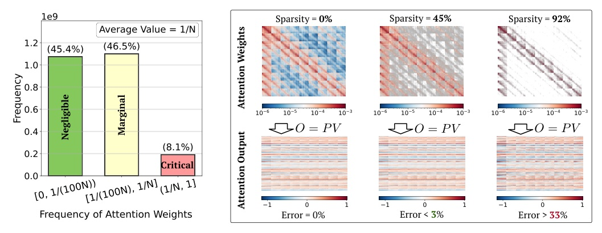
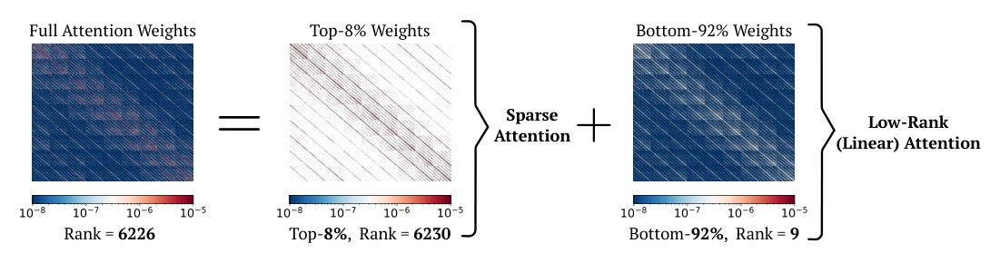

讓稀疏注意力負責高秩關鍵塊，讓線性注意力補償低秩邊際塊。
Source paper submitted 2025-11-19; accepted archival fallback after daily arXiv discovery returned HTTP 429.
不要把所有非關鍵注意力都丟掉。
把少量高秩部分算準，把大量低秩部分交給可學的線性補償。
Sparse attention
Linear attention


Sparsity is for the high-rank few.
Low-rank / linear structure is for the many.
Mask construction
Compute assignment
What SLA does
What SLA does not claim
Forward / backward
High-sparsity engineering
| Method | VA | VT | FLOPs | Sparsity |
|---|---|---|---|---|
| Full Attention | 76.78 | 82.88 | 52.75T | 0% |
| VSA | 55.37 | 64.61 | 5.92T | 89% |
| SLA | 76.96 | 83.92 | 2.74T | 95% |
| Measurement | Result | Comparison |
|---|---|---|
| Forward attention kernel | 13.7x | vs FlashAttention2 |
| Backward attention kernel | 6.8x | vs FlashAttention2 |
| Attention latency | 97s -> 11s | 8.8x reduction |
| Video generation E2E | 2.2x | Wan2.1-1.3B |
| Method | VA | VT | FLOPs | Sparsity |
|---|---|---|---|---|
| Linear Only | 0.042 | 0.099 | 0.10T | 100% |
| Sparse Only | 64.00 | 70.50 | 7.91T | 85% |
| L+S | 29.65 | 41.15 | 5.37T | 90% |
| SLA (softmax) | 76.96 | 83.92 | 2.73T | 95% |
SLA 的增益不是「線性注意力夠準」。
而是先抽出高秩關鍵結構，再讓線性分支補償其餘可學的低秩部分。
| Critical top k_h | VA | VT | FLOPs | Sparsity |
|---|---|---|---|---|
| 5% | 76.96 | 83.92 | 2.73T | 95% |
| 10% | 75.29 | 82.20 | 5.38T | 90% |
| 20% | 75.81 | 83.82 | 10.65T | 80% |
| SLA activation | VA | VT | FLOPs |
|---|---|---|---|
| softmax | 76.96 | 83.92 | 2.73T |
| elu+1 | 75.50 | 81.01 | 2.74T |
| hedgehog | 74.59 | 82.62 | 3.11T |
| Method | FID down | FLOPs down | Sparsity |
|---|---|---|---|
| Full Attention | 31.87 | 12.88G | 0% |
| VSA(2D) | 35.75 | 3.62G | 75.00% |
| SLA | 31.49 | 1.73G | 87.50% |
This is LightningDiT ImageNet 512x512 pretraining, reported in the appendix rather than the primary video experiment.
Supported by the paper
Not established here
“attention weights can be decoupled into two matrices: a small fraction of large weights with high rank and the remaining weights with very low rank.”
注意力權重可拆為少量高秩大權重，以及大量非常低秩的其餘權重。Abstract p.1
“Linear attention in SLA does not approximate the output corresponding to marginal attention weights, but serves as a learnable compensation...”
SLA 的線性分支不是直接近似邊際輸出，而是作為可學習的補償。§4.2 p.5
This is deliberately a data-availability statement, not a claim about review quality.
Preserve the high-rank few exactly; learn to compensate the low-rank many; skip only what is negligible.